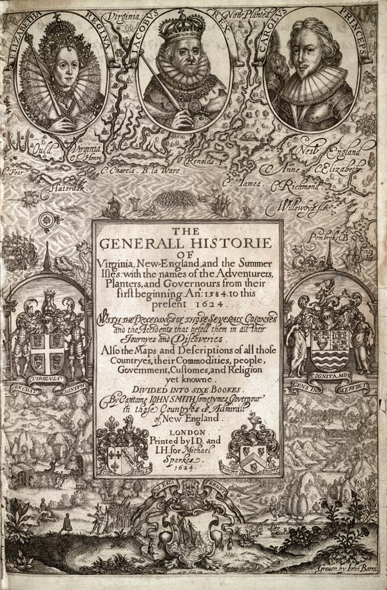
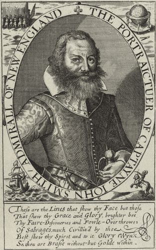
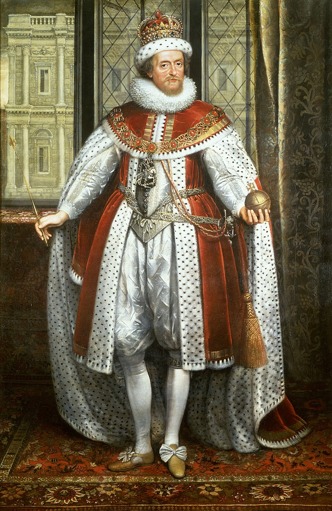
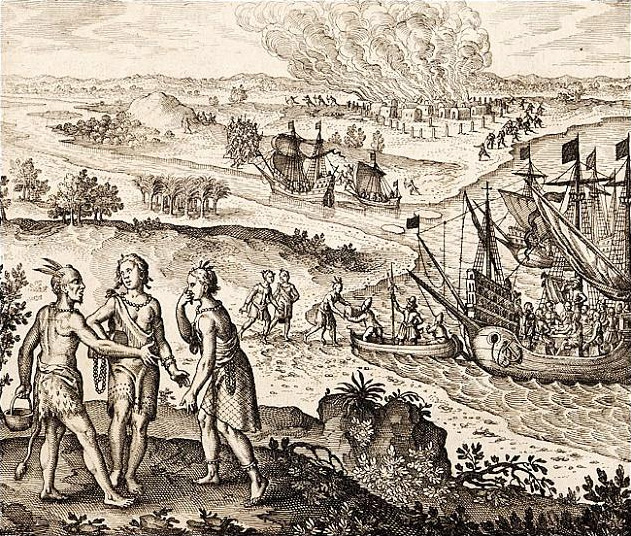

First settled in 1607, Virginia was the first successful English colony in North America. It represented the first steps of the British into the arena of European New World colonialism that had effectively been a Spanish monopoly since the voyages of discovery of Christopher Columbus in 1492. The settlement on the east coast of North America was meant to provide the British with their own source of fabulous colonial riches, such as the Spanish were continuing to extract from Mexico and South America, whilst also searching for a route west, to the Orient. The colony originally comprised of two settlements: Jamestown, on the James River, and Popham Colony on the Kennebec River. Disease, famine, and conflict with native Americans, especially the Algonquian tribes led by Chief Powhatan, led to the rapid failure of the Popham Colony, whilst Jamestown was also fortunate to survive these early years. Only the arrival of extra settlers and supplies in 1610 preserved the faltering nascent colony. Jamestown was to remain the capital of the colony of Virginia until 1699.
The first iteration of the settlement was very basic, comprising a simple wooden fort for defence, surrounded by a storehouse, several houses and, of course, a church. The arrival of essential supplies and settlers over the following decades helped the settlement expand beyond its original defensive perimeter. Agriculture in the region, notably of tobacco, encouraged the colony to develop even more rapidly.

The 104 settlers that arrived at the site that would be named Jamestown in 1607, all men and boys (there were no women on the first voyage) did not choose the site of their new settlement sensibly. Although it was easily defensible from predatory European expeditions thanks to being surrounded by water on three sides, it was a swampy region - a breeding ground for diseases - and it was low on arable land and hunting opportunities. Such limitations were part of the reason why there was no native presence on the peninsula in the first place, and lack of food and disease would have a devastating effect on the earliest decades of colonial society. Most notorious is the so-called Starving Time. Awaiting re-supply by the British over the winter of 1609-10, only 60 of the 500 colonists survived, with strong evidence indicating that the settlers had resorted to cannibalism. The settlers had actually elected to abandon Jamestown in the spring of 1610, only to be intercepted by the re-supply convoy, which returned them to the settlement. It was John Rolfe’s successful cultivation and commercialisation of tobacco that secured the long-term success of the colony.
As the first settlers were added to by the arrival of additional re-supply convoys, the make-up of colonial society obviously changed. However, reflecting the primarily economic motivations of the colonial venture and its backers, large numbers of the original settlers were members of the British aristocracy and upper classes; these were men wholly unused to the hard labour needed to make a success of a colony in a hostile environment. There were no women at the colony until the Second Supply convoy in 1608, and the arrival of ‘Mistress Forrest’ and her maid, Anne Burras. It was with the Second Supply that the first non-English settlers arrived. These were mostly skilled labourers and tradesmen, whose expertise helped secure the future of the colony.

When the first settlers arrived in 1607, they named the new settlement for after James I, the King of Britain. Royal authority would continue to exert control over the British colonies in America right up until the Revolution in 1775. For instance, it was King James who had granted the charter to the Virginia Company in 1606 that gave them permission to sail to and settle a colony in America. The authority of the Crown was reasserted in 1624 when the Virginia Company’s charter was revoked by James I, and the colony came under direct royal authority. In the mid-17th century, the colony was nicknamed ‘The Old Dominion’ for its unwavering loyalty to the English crown during the Civil War.
The legislature of the colony of Virginia was provided by a General Assembly, which administered the colony in co-ordination with a colonial governor. The colony of Virginia was a Proprietary Colony, meaning that the land, owned by the British monarch, was his prerogative to distribute to his friends, allies, and business associates through colonial charters. These charters encouraged these individuals to invest in the colonies and to govern them effectively and efficiently (in theory, at least), leaving the King to focus on domestic issues whilst reaping the rewards of stable colonial rule. Although the governors were thus typically aristocrats, the General Assembly model, established in 1619, was comprised of members elected by Virginia’s male landowners, making it an early form of representative government.

John Rolfe arrived in Jamestown in 1610 as part of the desperately needed Third Supply – the convoy which intercepted the settlers who had decided to abandon the colony following the Starving Time. His journey to the colony had not been plain sailing, and his wife and daughter had actually died on the voyage and been buried on the island of Bermuda. However, few individuals had such a profound impact on colonial society: it was Rolfe who established the first commercially successful tobacco plantation in the colony in 1612. The first barrels of the product, grown at Rolfe’s Varina Farms, helped secure the future of the colony of Jamestown.
The growth of tobacco farming though, as an indicator of the economic potential of the colonies, was one of the prime factors in the advent of slavery in North America. The first slaves arrived in 1619, a number of Angolans, kidnapped by Portuguese merchants and exchanged with British colonists; human lives were traded for food, following an attack on the Portuguese by Privateers. Technically, these Africans were sold to the colonists as indentured servants, meaning that they although they worked for free, this was in theory for a set duration – often to pay off a debt. They would be legally free at the end of their service contract. Indeed, a number of Europeans arrived in the North American colonies in similar circumstances. Colonial laws would contribute to the emergence of a racially structured slave system. Most notable was the John Punch case, in which a rebellious servant was punished by lifetime slavery, and similarly a court in 1662 ruled that children born to enslaved mothers became the property of the mother’s owner too. Although around only 400,000 Africans are estimated to have been transported directly to North America for slavery, compared to much higher numbers in South American (especially Brazil) and the Caribbean, these workers and their descendants became a crucial pillar in the economic growth of the colonies, thanks to their role in the cultivation of cash crops such as tobacco, sugar, and cotton.

The site of Jamestown had initially been so attractive to the European settlers because the land was not inhabited by the Powhatan native Americans, an Algonquin-speaking people. From their settlements, the Powhatans made excellent use of the natural resources in the region, subsisting on a diet of corn and squash, whilst the men of the tribe hunted the wildlife, including deer and fish. The original European colonists had envisaged establishing trade relationships with the natives, which would have been essential to the survival of the first settlers and their colony. For a while, the Powhatans did trade essential foodstuffs and furs with the settlers, often in exchange for metalworks and trinkets (metallurgy was not known to the Powhatans), and in rarer instances, weapons. The natives even passed on valuable information to the settlers, including how to insulate their homes with tree bark to protect them from the often-brutal elements.
However, in a pattern repeated around the world as European colonisers attempted to grow and develop their new settlements, tensions with natives soon grew and escalated into violence, motivated by competition for resources as well as mistrust. These included a series of Anglo-Powhatan Wars from 1610 to 1646, which included the notorious 1622 Jamestown Massacre. Perhaps the most famous episode of interaction between settlers and natives involved Captain John Smith, John Rolfe, and Pocahontas. When reconnoitring the Virginia countryside, John Smith strayed too far into Powhatan territory and was captured. Taken to the chief and fearing for his life, he was – so he claimed – saved by the intervention of the chief’s daughter, Pocahontas; a scene that captured the imagination of the Europeans and continues to inspire romance (and sometimes kitsch) re-imaginings. Pocahontas herself was captured by the Europeans in a series of hostilities in 1613. As a prisoner, she was encouraged to covert to Christianity. She did, taking the name Rebecca. She then married John Rolfe, the tobacco planter, with whom she had a son, Thomas, in 1615. She even travelled to England with Rolfe in 1616, presented to polite society as a “civilised savage” to prompt continued investment in the British colonial adventure.